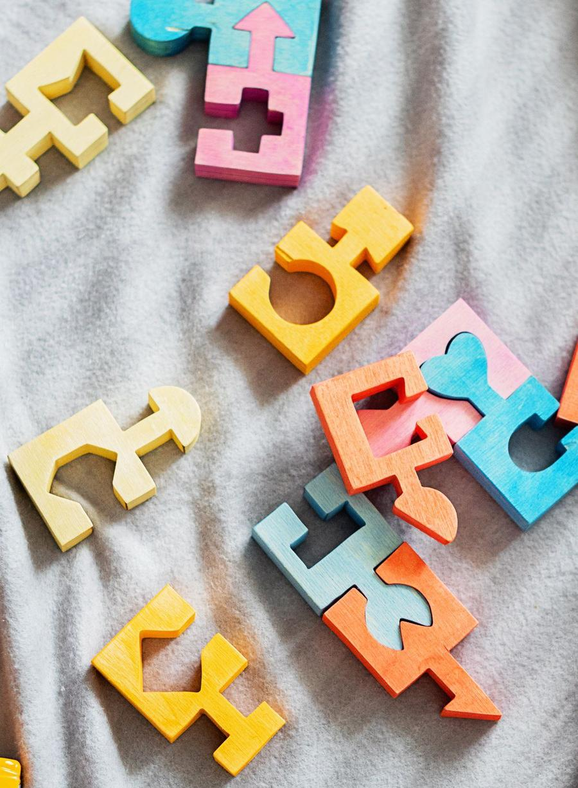
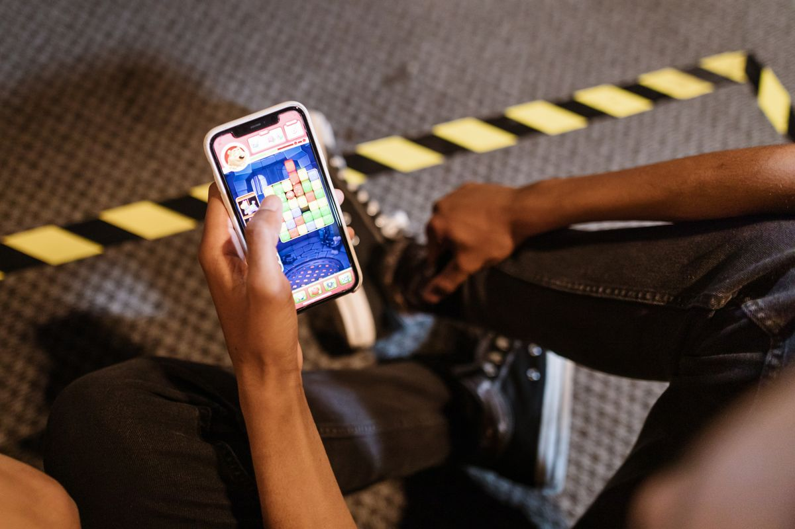
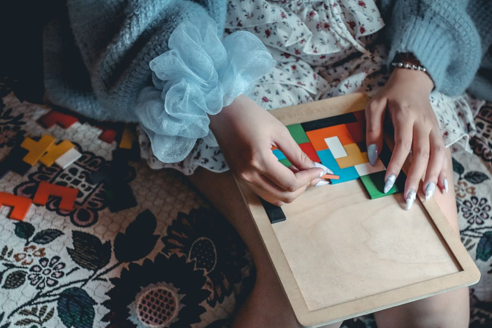

Kalau akhir-akhir ini kamu sering melihat game puzzle blok warna di Play Store, kemungkinan besar itu Color Block Combo Blast. Game ini lagi naik di Indonesia: data AppBrain mencatatnya pernah menempati peringkat 9 game gratis teratas dan peringkat 3 puzzle gratis teratas di Play Store Indonesia, dan pada 25 Oktober 2026 sebuah panduan cara mainnya baru saja terbit di media game Indonesia. Cara mainnya gampang dipahami tapi susah berhenti: susun balok warna, penuhi satu baris, lalu lihat baloknya hilang.
Artikel ini menjelaskan cara main Color Block Combo Blast dari nol: cara pasangnya, aturan dasarnya, sampai lima tips sederhana supaya papanmu tidak cepat penuh. Semua keterangan mengikuti halaman toko aplikasi dan data peringkat AppBrain per Oktober 2026.
Kenalan dulu dengan Color Block Combo Blast
Color Block: Combo Blast adalah game puzzle gratis buatan Flyyes, Inc. yang sudah ada di Play Store sejak April 2019. Versi terbarunya, 5.8.0, diperbarui pada 20 Oktober 2026. Di App Store, game ini dipegang oleh FLYYES TECHNOLOGY PTE. LTD., ukurannya 369,8 MB, butuh iOS 15.0 atau lebih baru, dan cocok untuk usia 4 tahun ke atas. Ratingnya 4,59 di Play Store Indonesia menurut ulasan media game pada 9 Oktober 2026.

Cara pasang gamenya di HP
Pasangnya sama seperti game lain, tapi periksa dulu nama pengembangnya supaya kamu tidak salah unduh game tiruan.
- Buka Play Store di HP Android atau App Store di iPhone.
- Ketik Color Block Combo Blast di kolom pencarian.
- Periksa nama pengembangnya: Flyyes di Play Store atau FLYYES TECHNOLOGY PTE. LTD. di App Store.
- Ketuk Pasang atau Dapatkan, lalu tunggu unduhannya selesai.
- Buka gamenya dan langsung main. Kamu tidak perlu membuat akun untuk mulai bermain.
Ukuran unduhannya di iPhone 369,8 MB, jadi pastikan masih ada ruang kosong di HP. Kalau kuotamu tipis, unduh lewat Wi-Fi saja.
Cara mainnya, langkah demi langkah
Inti permainannya sederhana. Kamu diberi papan kosong dan tiga balok warna di bagian bawah layar. Seret balok itu ke papan, lalu isi satu baris atau satu kolom sampai penuh. Begitu satu baris penuh, balok di baris itu hilang dan kamu mendapat poin. Kalau kamu berhasil mengisi dua baris atau lebih dalam satu langkah, kamu mendapat kombo dan poin yang lebih besar. Tidak ada batas waktu, jadi kamu boleh berpikir dulu sebelum meletakkan balok.
- Seret satu balok dari tiga balok yang tersedia ke papan.
- Isi baris atau kolom sampai penuh supaya baloknya hilang dan kamu dapat poin.
- Isi dua baris atau lebih sekaligus untuk kombo dan poin yang lebih besar.
- Perhatikan tiga balok berikutnya sebelum meletakkan balok yang sekarang.
- Permainan berakhir kalau tidak ada satu pun dari tiga balok itu yang muat di papan.
Itulah yang membuat game ini enak dimainkan sambil menunggu atau sebelum tidur: santai, tapi tetap butuh mikir.

Lima tips supaya papan tidak cepat penuh
Kesalahan paling umum pemain baru adalah meletakkan balok di mana saja yang kosong. Padahal papan yang berantakan akan cepat penuh dan permainanmu selesai lebih cepat. Lima kebiasaan ini bisa membantumu bertahan lebih lama.
- Sisakan ruang untuk balok besar. Balok berbentuk L atau kotak 3x3 butuh ruang lebar, jadi jangan biarkan papanmu penuh dengan celah kecil yang tidak berguna.
- Isi dari sudut dan tepi dulu. Baris di pinggir lebih mudah dipenuhi tanpa mengorbankan ruang di tengah.
- Jangan asal menghabiskan baris yang gampang. Kadang lebih baik menunggu satu langkah supaya dua baris bisa hilang sekaligus dan kamu mendapat kombo.
- Simpan satu celah untuk balok panjang. Balok lurus 4 atau 5 kotak hanya muat di satu garis lurus, jadi sediakan jalurnya sejak awal.
- Lihat tiga balok sekaligus sebelum bergerak. Balok yang kamu letakkan sekarang menentukan apakah balok berikutnya masih muat.

Gratis atau ada yang berbayar?
Color Block Combo Blast gratis diunduh dan dimainkan. Di dalam game ada iklan dan pembelian dalam aplikasi, termasuk pilihan hapus iklan seharga Rp99 ribu di App Store. Kamu bisa memainkan gamenya sampai tamat tanpa membayar apa pun, karena iklan hanya muncul di sela permainan. Kalau iklan terasa mengganggu, opsi hapus iklan itu tersedia, tapi tidak wajib dibeli.
Intinya
Color Block Combo Blast adalah game puzzle blok warna gratis yang lagi trending di Play Store Indonesia per Oktober 2026. Cara mainnya gampang: seret balok ke papan, penuhi baris atau kolom, dan kejar kombo sebanyak mungkin. Kalau kamu baru mulai, ingat satu hal saja: jangan asal menaruh balok. Papan yang rapi bertahan lebih lama daripada papan yang penuh tapi berantakan.
← Kembali ke Other